最近正在學習 Vue，想給自己做一份筆記。
這篇文章的主要參考資料為 Vue 的官方教程。
Hello World 1 2 3 4 5 6 7 8 9 10 11 <div id ="app" > <p v-text ="message" > </p > {{ message }} </div > <script src ="https://cdn.jsdelivr.net/npm/vue@2/dist/vue.js" > </script >
1 2 3 4 5 6 7 8 9 let app = new Vue({ el : '#app' , data : { message : 'Hello Vue.' } })
Vue 中的資料都是動態的，妳資料一更改，顯示出的內容也會同步跟著做更改。
如果你希望資料不要被動態更新，你可以使用v-once這個屬性。
1 2 3 4 <div id ="app" > <p v-once class ="btn" > {{ msg }}</p > </div >
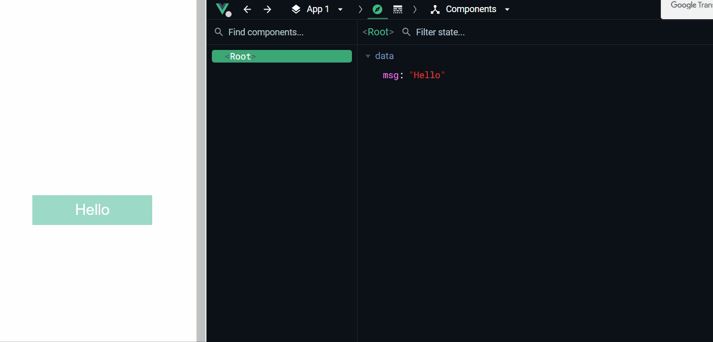
在內容中帶入 JS 的表達式 除了直接把 Vue 的資料寫入之外，我們也可以在{{ }}裡面添加表達式來產生出不同的資料。
1 2 3 4 5 6 <div id ="app" > <p > 原價：${{ price }}</p > <p > 折扣價：${{ price * discount }}</p > </div >
1 2 3 4 5 6 7 let vm = new Vue({ el : '#app' , data : { price : 100 , discount : 0.8 } })
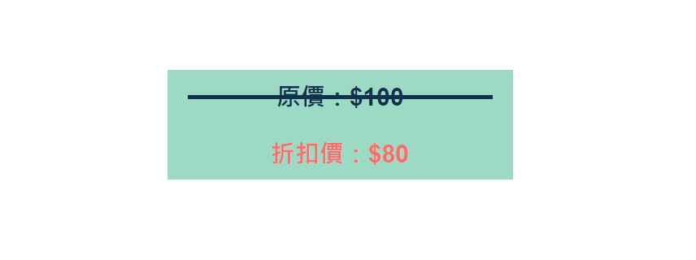
1 2 3 4 <div id ="app" > <p > 不可吃油炸物：{{ agree ? '同意' : '不同意' }}</p > </div >
1 2 3 4 5 6 let vm = new Vue({ el : '#app' , data : { agree : true } })
1 2 3 4 <div id ="app" > <p class ="btn" > {{ msg.split('').reverse().join('') }}</p > </div >
1 2 3 4 5 6 let vm = new Vue({ el : '#app' , data : { msg : '把這段文字反過來念' } })
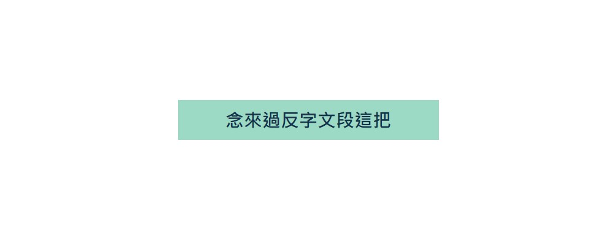
寫入 HTML 內容 使用{{ }}來輸出的內容都會以純文字來做輸出，所以如果你想寫入 HTML 的話，必須改使用v-html。
1 2 3 4 5 6 <div id ="app" > <p > {{ htmlData }}</p > <p v-html ="htmlData" > </p > </div >
1 2 3 4 5 6 let vm = new Vue({ el : '#app' , data : { htmlData : '<span class="txt--blue">這段文字應該要是藍色的</span>' } })
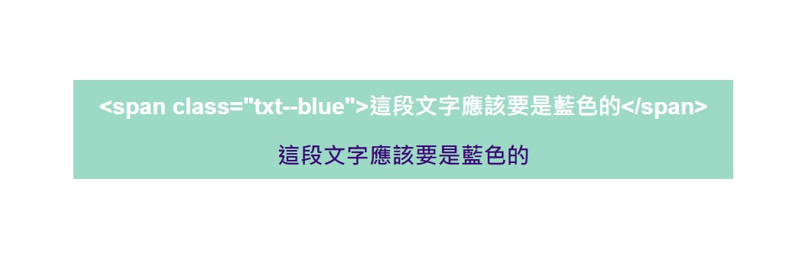
💡 註：寫入 HTML 內容就意味著有 XSS 的風險，這一點要多留意一下。
綁定 HTML 屬性值
v-bind:attr = 我要把哪一個屬性綁定到 Vue？v-bind:attr="value" = 參考到 Vue 實體中的 value 值。
1 2 3 4 5 <div id ="app" > <span v-bind:title ="time" > 秀出讀取該頁面的時間點</span > </div >
1 2 3 4 5 6 7 8 let app = new Vue({ el : '#app' , data : { time : `${new Date ().toLocaleString()} 頁面載入完成。` } })
如果你去改time的值，那title屬性的值也會跟著同步更新。
像是disabled這種屬性也能透過 v-bind 來綁定，並用boolean來控制。
1 2 3 <div id ="app" > <button class ="btn" v-bind:disabled ="isButtonDisabled" > A button</button > </div >
1 2 3 4 5 6 7 let vm = new Vue({ el : '#app' , data : { isButtonDisabled : true } })
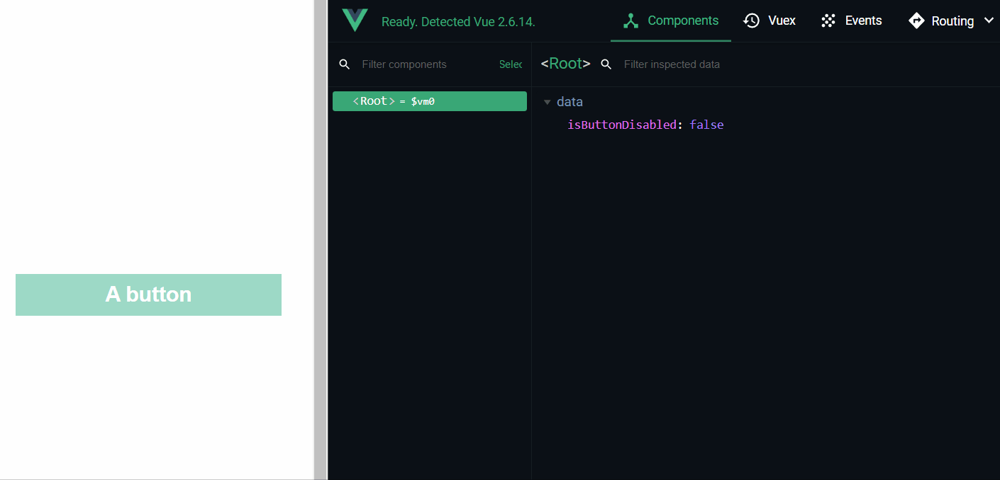
動態參數 我們前面用的v-bind:href, v-bind:disabled等，這些放在:(冒號)後面的值都我們稱為參數。
如果現在想使用變數來表示這些參數，可以使用[ ]來實現。
💡 註 1：動態參數聽起來有點繞口，但是其實是因為我們在 Vue 中定義的變數都會動態更新，所以才會用動態這個詞來解釋吧。 💡 註 2：[ ]只接受字串值
1 2 3 4 5 6 7 <div id ="app" > <a v-bind:href ="url" > link-1</a > <a v-bind: [attribute ]="url" > link-2</a > </div >
1 2 3 4 5 6 7 8 let vm = new Vue({ el : '#app' , data : { attribute : 'href' , url : 'https://www.google.com/' } })
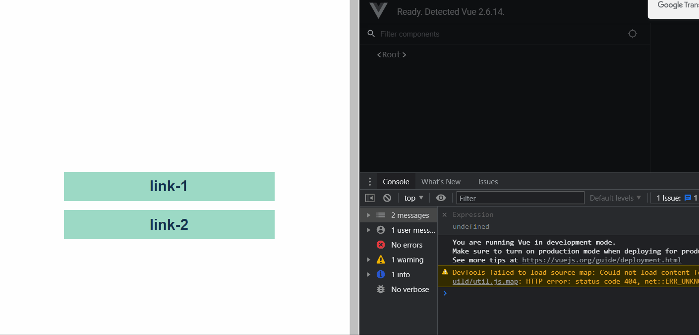
事件綁定也是以此類推。
1 2 3 4 5 6 <div id ="app" > <button class ="btn" v-on:click ="count++" > {{ count }}</button > <button class ="btn" v-on: [eventname ]="count++" > {{ count }}</button > </div >
1 2 3 4 5 6 7 8 let vm = new Vue({ el : '#app' , data : { count : 0 , eventname : 'click' } })
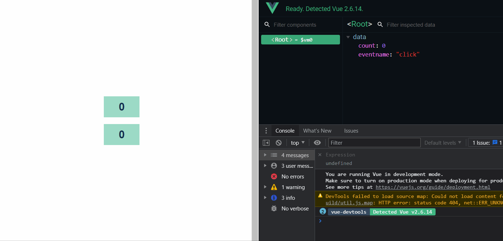
💡 註 1：這裡不要用駝峰式來命名，因為此處的 HTML 無法透過Kebab-case (連字符號)來讀取，而是會直接轉成小寫。 💡 註 2：如果想要解除綁定，可以將參數值設為null
寫成變數的好處是，可以帶入表達式。
1 2 <p v-bind: [foo +"le "]="value" > 把游標放上來</p >
1 2 3 4 5 6 7 8 9 let vm = new Vue({ el : '#app' , data : { count : 0 , foo : 'tit' , value : '真聽話' } })
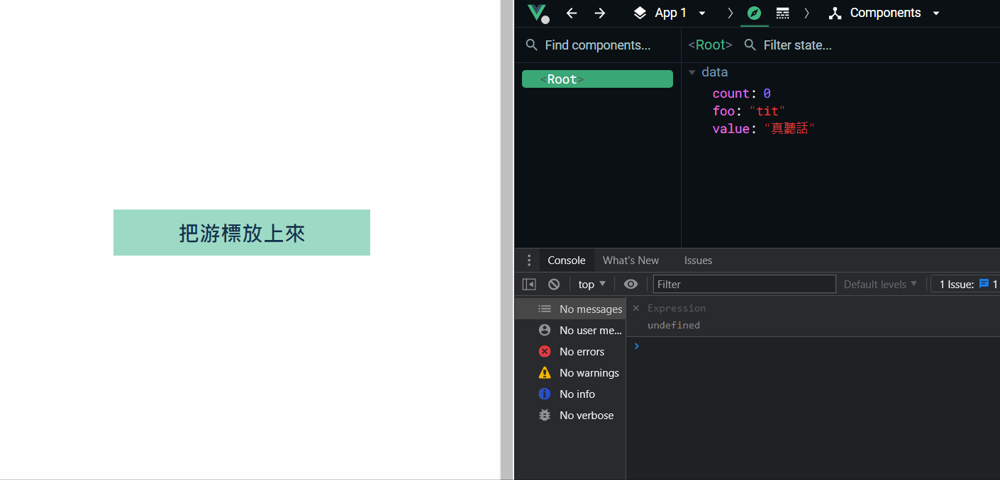
💡 註 ：這裡只是方便示範才這樣寫，實際使用表達式時，請盡量避免出現空格, 引號等特殊字符，否則可能會報錯。
修飾子 v-指令後面除了接:參數以外，也可以接.修飾子。
1 2 3 4 5 6 7 8 9 <div id ="app" > <form v-on:submit.prevent ="onSubmit" > <input type ="submit" value ="Send" /> <p v-if ="isSended" > 已按下送出鈕。</p > </form > </div >
1 2 3 4 5 6 7 8 9 10 11 12 let vm = new Vue({ el : '#app' , data : { isSended : false }, methods : { onSubmit : function ( this .isSended = true } } })
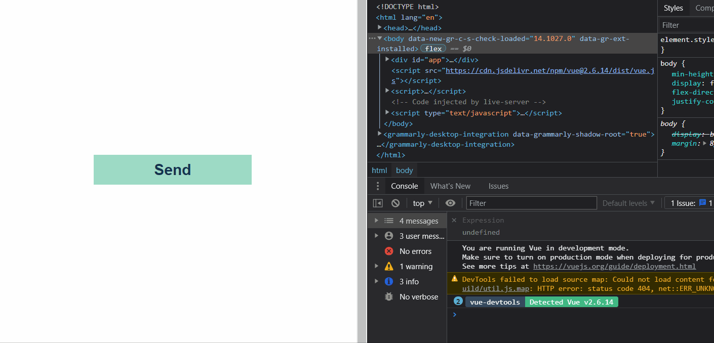
注意到表單並沒有被送出（沒有重新渲染的動作），這就是修飾子.prevent帶來的作用。
v-if 元素的顯示與隱藏 透過v-if可以決定一個元素要顯示 or 隱藏。
如果是truthy，元素會顯示出來。
如果是falsy，元素會隱藏起來。
1 2 3 4 5 6 <div id ="app" > <p v-if ="exist" > 妳看的到我</p > <p v-if ="notExist" > 妳看不到我</p > </div >
1 2 3 4 5 6 7 8 9 10 let app = new Vue({ el : '#app' , data : { exist : true , notExist : false } })
也可以添加一個v-else。
1 2 3 4 5 6 <div id ="app" > <p v-if ="exist" > 今天有晚餐吃</p > <p v-else > 今天沒晚餐吃</p > </div >
💡 註：v-else 必須緊跟在 v-if 或 v-else-if 的元素後面，否則無法被識別。
或者是v-else-if
1 2 3 4 5 6 7 8 9 <h1 > Hello</h1 > <p v-if ="countSister === 1" > You have a sister.</p > <p v-else-if ="countSister === 2" > You have two sisters.</p > <p v-else-if ="countSister === 3" > You have three sisters.</p > <p v-else > Wake up, you have too more sister or you don't even have a sister.</p >
💡 註：v-else-if 一樣要跟在 v-if 或 v-else-if 的元素後面，否則無法被識別。
所以除了前面的文字、屬性之外，Vue 還能夠控制 DOM 的結購
控制多個元素 如果一次想控制多個元素的顯示與否，可以使用<template>元素將元素給群組起來。
1 2 3 4 5 <template v-if ="noSister" > <h1 > Hello</h1 > <p > Wake up, you don't have a sister.</p > <p > You only have a brother.</p > </template >
這樣子最後的結果不會渲染出<template>，只會有裡面的內容。
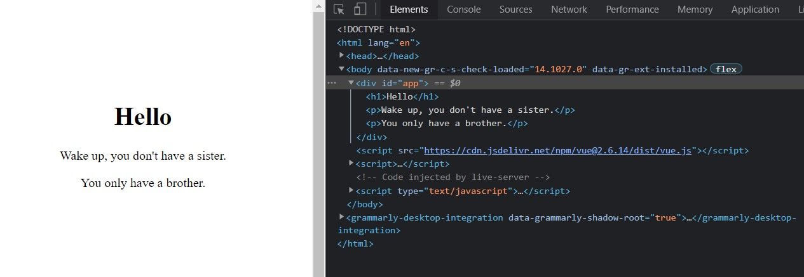
節能機制與 key 屬性 為了省掉不必要的浪費，若沒有必要的話，Vue 會盡量用目前存在的元素來做修改內容，而不是把整個元素重新渲染一次。
1 2 3 4 5 6 7 8 9 10 11 <template v-if ="loginType === 'username' " > <label for ="username" > Username:</label > <input id ="username" type ="text" placeholder ="輸入使用者名稱" /> </template > <template v-else > <label for ="email" > Username:</label > <input id ="email" type ="email" placeholder ="輸入信箱" /> </template >
當我們切換的時，你能看到元素沒有重新渲染，只有屬性跟內容的部分被修改，並且我們輸入的值也繼續停留在輸入格中。
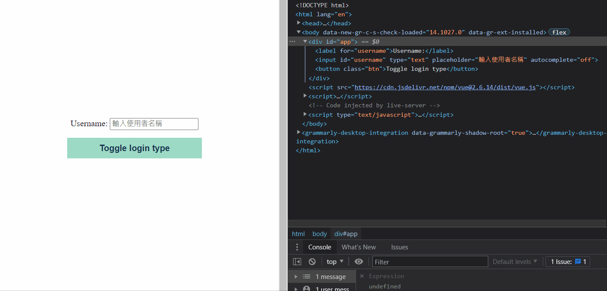
如果不想套用這種機制，可以在元素中加入key屬性來讓元素具有唯一性。
1 2 3 4 5 6 7 8 9 10 11 12 13 14 15 16 <template v-if ="loginType === 'username' " > <label for ="username" > Username:</label > <input id ="username" type ="text" placeholder ="輸入使用者名稱" key ="typeOfUsername" /> </template > <template v-else > <label for ="email" > Username:</label > <input id ="email" type ="email" placeholder ="輸入信箱" key ="typeOfEmail" /> </template >
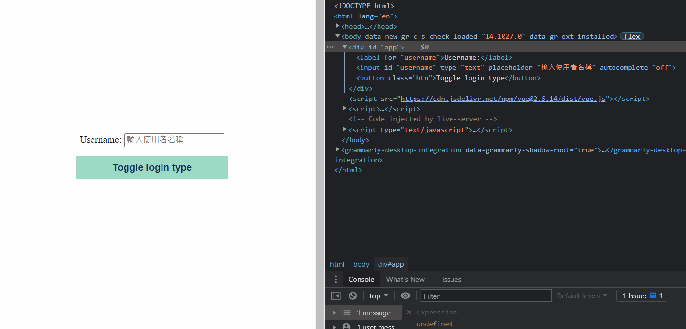
現在兩個<input>各自具有唯一性，所以切換時會重新渲染，至於<label>還是繼續使用節能機制，只有內容被修改。
v-show 一個跟v-if很類似的指令，用法上大致相同
1 <p v-show ="ok" > 只是段文字</p >
💡 註：v-show 不支援 <template> 與 v-else 。
不過它跟v-if有個很大的差異在於：是否會渲染到DOM中？
所以如果某個元素經常在顯示與隱藏間做切換，v-if會比較適合。
反之，如果某個元素不常在顯示與隱藏間做切換，v-show會比較適合。
v-for 重複產生元素 透過v-for可以來根據資料的數量（length），來產生出對應數量的元素。
💡 註 1：v-for寫在哪個元素身上，哪個元素就會重複產生 。 💡 註 2：item in list 也可以寫成 item of list。
迭代的資料為陣列 1 2 3 4 5 6 <ul class ="menu" > <li class ="btn" v-for ="item of dinnerList" > {{ item }}</li > </ul >
1 2 3 4 5 6 let vm = new Vue({ el : '#app' , data : { dinnerList : ['豬排飯' , '咖哩飯' , '炒飯' , '麵包' , '拉麵' ] } })
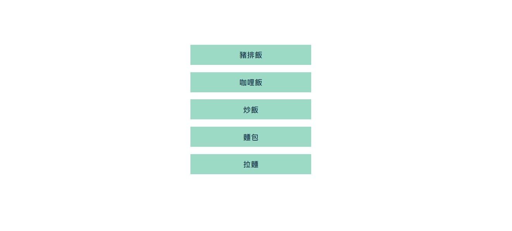
你也可以把這段過程想像成是這樣子：
1 2 3 for (let i = 0 ; i < foods.length; i++) { li.textContent = foods[i] }
迭代的陣列為物件 1 2 3 4 5 <ul class ="menu" > <li class ="btn" v-for ="info in character" > {{ info }}</li > </ul >
1 2 3 4 5 6 7 8 9 10 11 12 13 let vm = new Vue({ el : '#app' , data : { character : { name : '煉獄杏壽郎' , level : '炎柱' , sex : '男' , age : '20歲' , death : '被猗窩座打死' } } })
第二個可選參數 如果想要取得迭代元素的索引值，可以加入第二個可選參數。
1 2 3 4 5 6 7 8 <ul class ="menu" > <li class ="btn" v-for ="(item, index) in dinnerList" > {{ index }} {{ item }} </li > </ul >
1 2 3 4 5 6 let vm = new Vue({ el : '#app' , data : { dinnerList : ['豬排飯' , '咖哩飯' , '炒飯' , '麵包' , '拉麵' ] } })
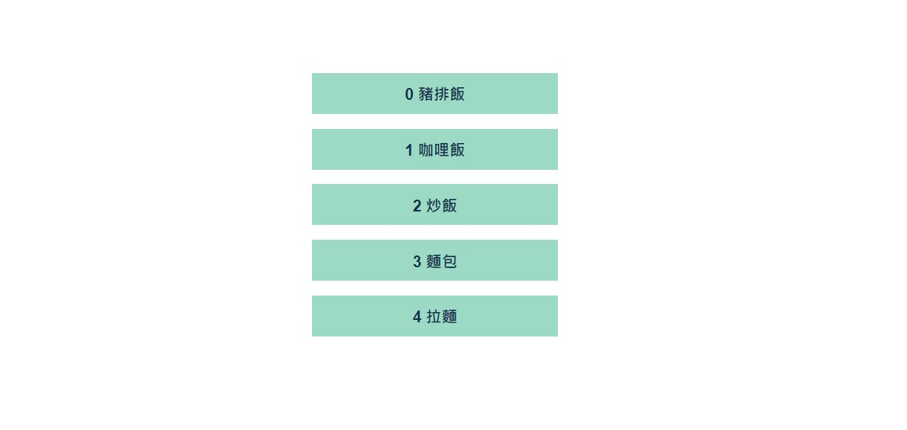
如果迭代的資料是物件的話，第二個參數可以用來表示物件中的鍵名(key)
1 2 3 4 5 <ul class ="menu" > <li class ="btn" v-for ="(value, key) in character" > {{ key }}：{{ value }}</li > </ul >
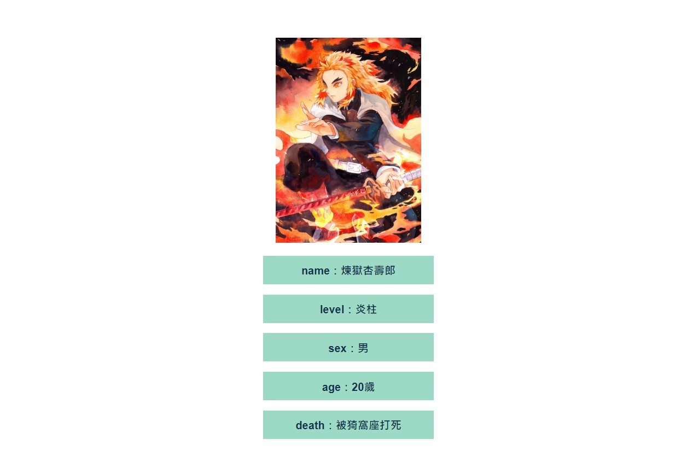
如果想在物件中取得索引值，可以加入第三個參數來取得。
1 2 3 4 5 6 7 8 <ul class ="menu" > <li class ="btn" v-for ="(value, key, index) in character" > ({{index}}) {{ key }}：{{ value }} </li > </ul >
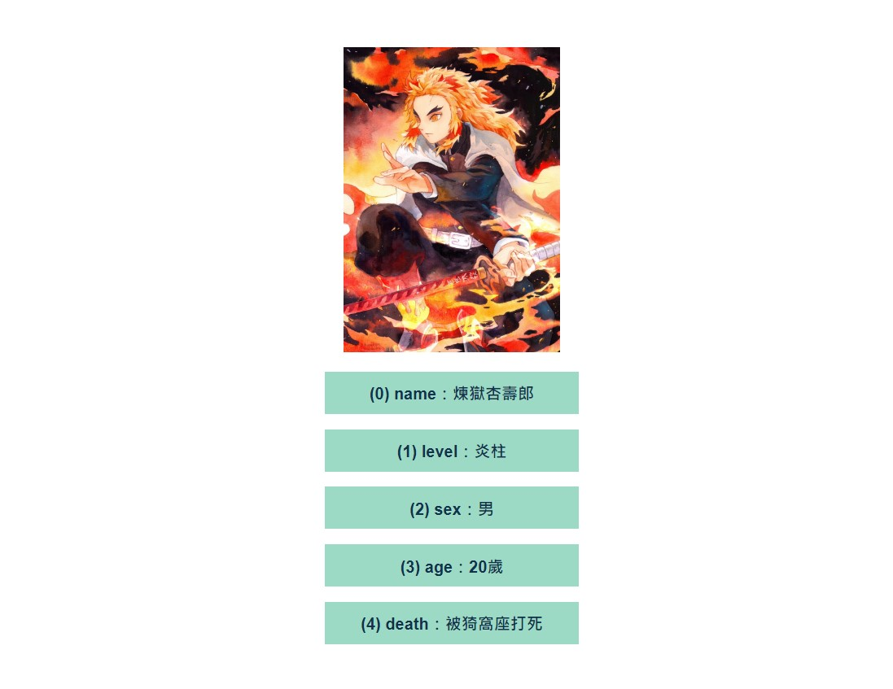
指定特定數值 除了迭代一個陣列或物件以外，你也可以直接指定一個數字來重複產生元素。
1 2 3 4 <ul class ="list" > <li class ="btn" v-for ="i in 12" > {{ i }}</li > </ul >
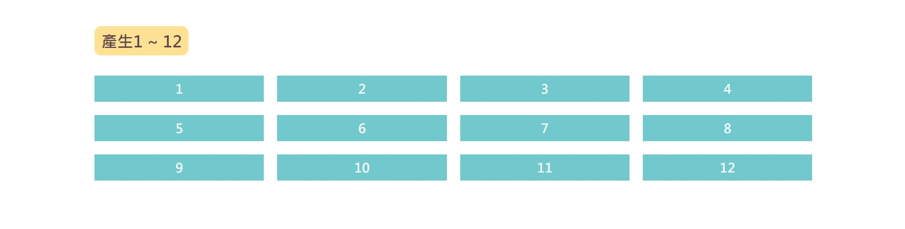
🚀 Codepen：點這裡
重複產生多個元素 與 v-if 的概念一樣，如果要產生的是一組元素，可以用 <template> 來把它們給包起來。
1 2 3 4 5 6 7 8 <template v-for ="i in 5" > <h2 class ="title" > 產生1 ~ 12</h2 > <ul class ="list" > <li class ="btn" v-for ="i in 12" > {{ i }}</li > </ul > </template >
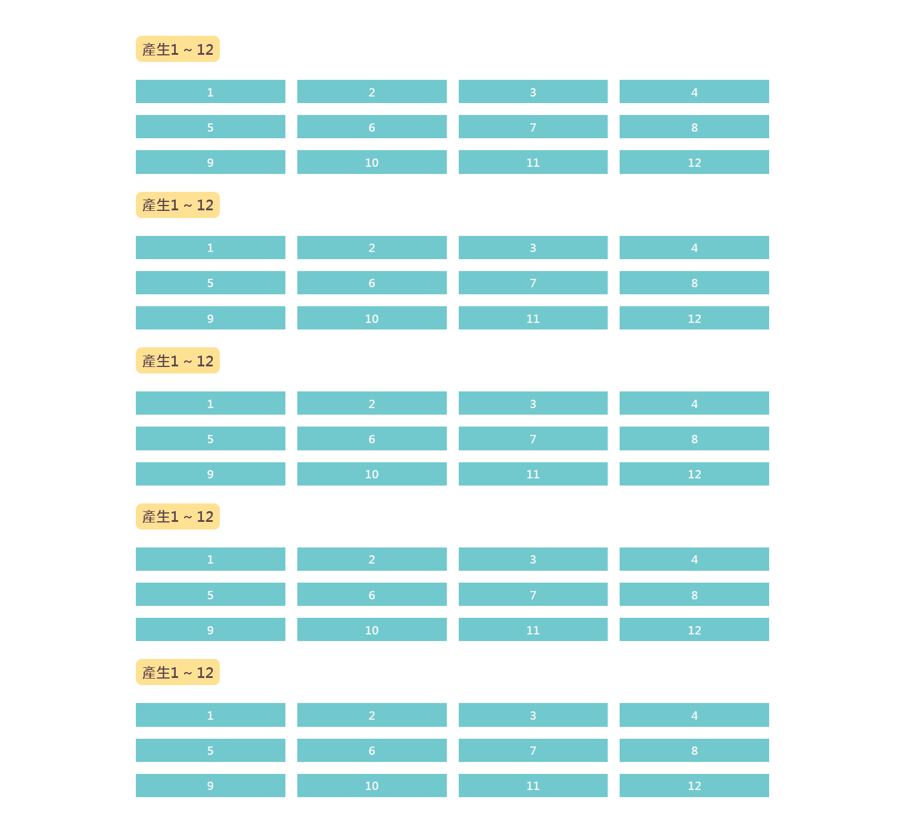
🚀 Codepen：點這裡
節能機制與 key 屬性 前面提到的節能機制，在v-for中也會套用。
如果v-for迭代的資料發生了更新，為了節省資源，Vue 一樣會盡可能使用現有的元素來做修改，而不是把整個資料給重新渲染一次。
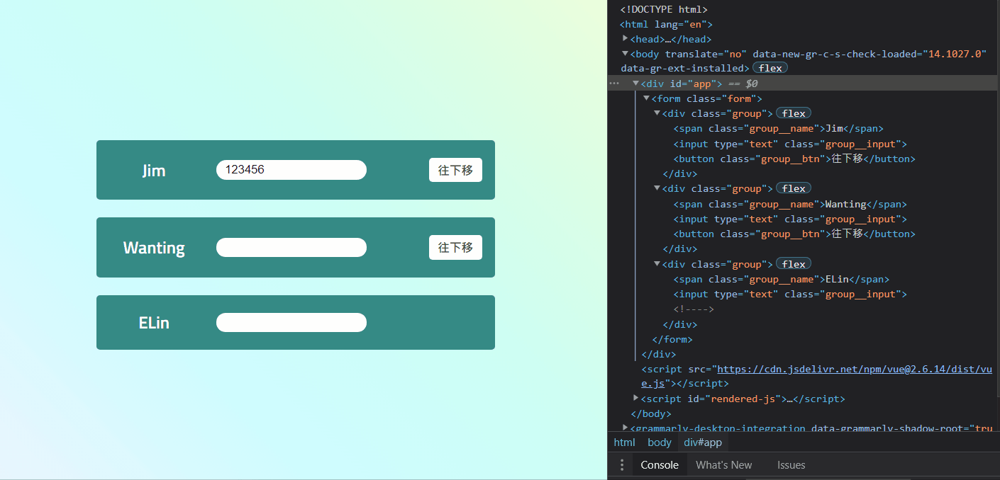
🚀 Codepen：點這裡
💡 註 ：仔細看，只有內容的部分被更新，但元素並沒有被重新渲染。
如果一個列表只是單純用來顯示內容，那這種節能機制確實是沒什麼問題的。
但如果是像上面的情況，這個列表會與使用者互動，那就會讓人感到有點困惑。
要解決節能機制的副作用，一樣是加上key這個屬性來讓元素具有唯一性，確保它能夠被重新渲染。
🚀 Codepen：點這裡
💡 註 ：現在當資料更新時，整個<div>都會被重新渲染，而位置是正確的。
陣列的更新 由於 Vue 會隨著資料的更新來更新畫面，所以如果你使用了會影響原始陣列本身的方法，像是：
push()pop()shift()unshift()splice()sort()reverse()
當陣列被更新後，畫面就會隨著陣列中資料的改變來同步更新。
如果你不希望這樣的話，可以改使用不影響原始陣列的方法，像是：
filter()concat()slice()
這些方法都是回傳一個新的陣列，所以才不會影響到原始陣列。
舉一個常見的例子，假設我們想要對一份資料做篩選，這時並不會希望直接去動原本的資料，而是能夠再產生出一份篩選過後的資料。
這個時候就可以利用上面提的方法以及 computed 屬性來實作。
1 2 3 4 5 6 7 8 9 10 11 12 13 14 15 16 17 18 19 20 21 22 23 24 25 26 27 28 29 30 31 32 33 34 35 36 37 38 39 40 41 42 43 44 45 46 47 48 49 50 51 52 53 54 55 56 let vm = new Vue({ el : '#app' , data : { mantous : [ '蛋黃鮮肉包' , '香菇薑汁鮮肉包' , '黑米椰香芋頭包' , '黑糖地瓜包' , '蔥肉包' , '咖啡奶酥饅頭' , '全麥堅果饅頭' , '黑糖桂圓枸杞饅頭' , '蔥花捲饅頭' , '黑糖饅頭' , '鮮奶饅頭' , '芋籤饅頭' , '山東饅頭' , '全麥饅頭' , '紅藜全麥饅頭' , '起司肉包' , '全麥雜糧饅頭' , '芋泥捲' , '芋泥饅頭' , '地瓜芋頭饅頭' , '芋圓饅頭' ] }, computed : { taros : function ( return this .mantous.filter(function (item ) return item.includes('芋' ) }) }, meats : function ( return this .mantous.filter(function (item ) return item.includes('肉' ) }) }, brownSugar : function ( return this .mantous.filter(function (item ) return item.includes('黑糖' ) }) }, healthy : function ( return this .mantous.filter(function (item ) return item.includes('麥' ) }) } } })
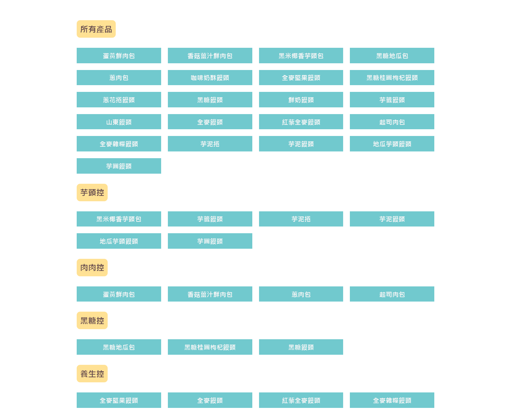
🚀 Codepen：點這裡
v-for 比 v-if 的優先權高 這裡先參考 Vue 的一段源碼：
1 2 3 4 5 6 7 8 9 10 11 12 13 14 15 16 17 18 19 20 21 22 23 export function genElement (el: ASTElement, state: CodegenState ): string if (el.parent) { el.pre = el.pre || el.parent.pre } if (el.staticRoot && !el.staticProcessed) { return genStatic(el, state) } else if (el.once && !el.onceProcessed) { return genOnce(el, state) } else if (el.for && !el.forProcessed) { return genFor(el, state) } else if (el.if && !el.ifProcessed) { return genIf(el, state) } else if (el.tag === 'template' && !el.slotTarget && !state.pre) { return genChildren(el, state) || 'void 0' } else if (el.tag === 'slot' ) { return genSlot(el, state) } else { ... }
從源碼中可以看到，v-for 會先執行，接著才執行 v-if，所以 v-for 的優先權比 v-if 來得高。
而如果我們在一個元素上同時進行 v-for 跟 v-if，代表 v-if 在每一次的循環中都會被執行一次。
這樣子的作法是比較浪費效能的，舉例來說，如果我們只想顯示庫存產品，但我們每次在渲染的時候，都得先迭代所有產品，再從所有產品中判斷該產品是否還有庫存。
1 2 3 4 5 6 7 8 <h2 class ="title" > 販售中</h2 > <ul class ="list" > <li class ="btn" v-for ="mantou in mantous" v-if ="mantou.quantity" > {{ mantou.name }} </li > </ul >
1 2 3 4 5 6 7 8 9 10 11 12 13 14 15 16 17 18 19 20 21 22 23 24 25 26 27 let vm = new Vue({ el : '#app' , data : { mantous : [ { name : '蛋黃鮮肉包' , quantity : 10 }, { name : '香菇薑汁鮮肉包' , quantity : 0 }, { name : '黑米椰香芋頭包' , quantity : 10 }, { name : '黑糖地瓜包' , quantity : 0 }, { name : '蔥肉包' , quantity : 0 }, { name : '咖啡奶酥饅頭' , quantity : 0 }, { name : '全麥堅果饅頭' , quantity : 10 }, { name : '黑糖桂圓枸杞饅頭' , quantity : 10 }, { name : '蔥花捲饅頭' , quantity : 0 }, { name : '黑糖饅頭' , quantity : 0 }, { name : '鮮奶饅頭' , quantity : 10 }, { name : '芋籤饅頭' , quantity : 0 }, { name : '山東饅頭' , quantity : 0 }, { name : '全麥饅頭' , quantity : 10 }, { name : '紅藜全麥饅頭' , quantity : 0 }, { name : '起司肉包' , quantity : 0 }, { name : '全麥雜糧饅頭' , quantity : 0 }, { name : '芋泥捲' , quantity : 0 }, { name : '芋泥饅頭' , quantity : 10 }, { name : '芋圓饅頭' , quantity : 10 } ] } })
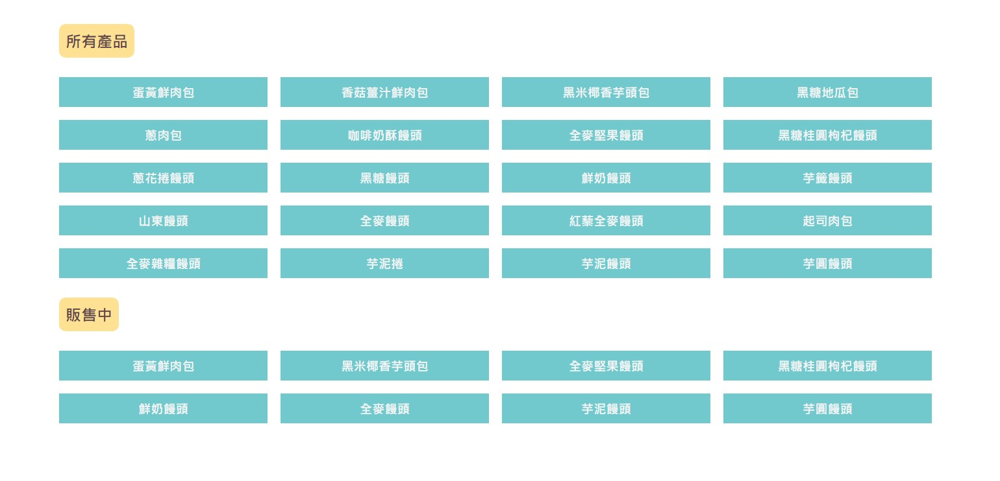
🚀 Codepen：點這裡
想像一下如果有 10 個地方都會用到販售中的這份清單，那上面的流程就得跑 10 次，這顯然不是個好做法對吧？
比較好的做法是把販售中的這份清單先透過 computed 先做過濾，並且把結果緩存起來。
1 2 3 4 5 6 <h2 class ="title" > 販售中</h2 > <ul class ="list" > <li class ="btn" v-for ="mantou in inStock" > {{ mantou.name }}</li > </ul >
1 2 3 4 5 6 7 8 computed: { inStock : function ( return this .mantous.filter(function (item ) return item.quantity }) } }
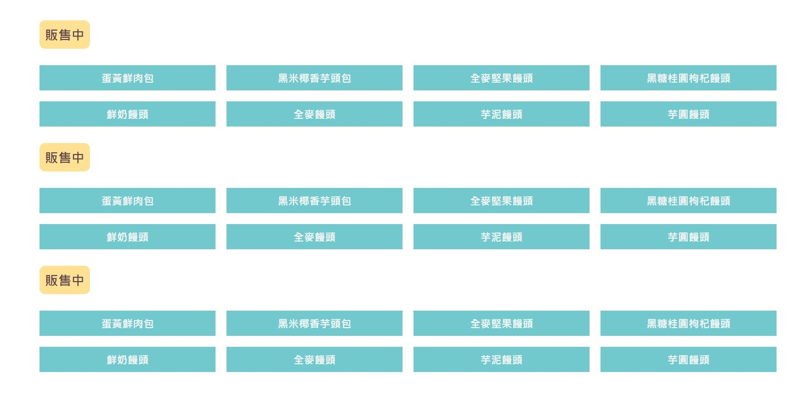
🚀 Codepen：點這裡
現在v-for只需要迭代 inStock 清單中的資料，而不是整個產品列表。
而 computed 具有緩存的特性，所以即便有 3 份販售中的清單，v-if實際上也只需要判斷一次。
另外一種情況
除了剛剛所說的以外，還有一種情況是，先用 v-if 判斷是否要顯示，在進行 v-for 循環。
如果是這種情況的話，可以把 v-if 寫在 外層元素 或 <template> 來判斷，要循環的元素寫在內層。
1 2 3 4 5 <h2 class ="title" > 販售中</h2 > <ul class ="list" v-if ="mantous.length" > <li class ="btn" v-for ="mantou in mantous" > {{ mantou.name }}</li > </ul >
想想看，如果把 v-if 寫在 <li> 的話，會變什麼樣子？
答案是會執行 v-for，接著執行 v-if。
因為 v-for 的優先權比 v-if 高，所以即便沒有資料， v-for 還是會先執行，接著才執行 v-if。
v-on 事件綁定 透過v-on可以綁定事件到一個元素上，並設定一個處理事件的 function
1 2 3 4 5 6 7 <div id ="app" > <p > Count: <span > {{ counter }}</span > </p > <button v-on:click ="addNumber" > 點我RRRRRR</button > </div >
1 2 3 4 5 6 7 8 9 10 11 12 13 let app = new Vue({ el : '#app' , data : { counter : 0 }, methods : { addNumber : function ( this .counter++ } } })
有一件很重要的事情是，在我們的原始碼當中，並沒有對 DOM 做任何更新內容的操作。
這部分 Vue 都幫我們直接處理好了，所以現在我們只需要專注在程式的層面上。
💡 註：此處的this指向的是 app 這個 Vue 的物件實體。
縮寫 v-系列的相關指令其實都有一套縮寫的寫法。
v-bind縮寫
1 2 3 4 5 6 7 8 <a v-bind:href ="url" > ...</a > <a :href ="url" > ...</a > <a : [key ]="url" > ...</a >
v-on縮寫
1 2 3 4 5 6 7 8 <button v-on:click ="doSomething" > Click Me</button > <button @click ="doSomething" > Click Me</button > <button @[event ]="doSomething" > Click Me</button >
v-cloak 如果沒用這個屬性的話，你可能就會在網頁載入時看到 {{ msg }} 之類的變數。
要避免這個情況只需要加上v-cloak這個屬性跟一點點 CSS 即可解決。
1 2 3 <div id ="app" > <p > {{ msg }}</p > </div >
1 2 3 [v-cloak] { display : none; }
v-model 雙向綁定 透過v-model可以讓資料是雙向綁定的狀態，意思是指 data 跟 元素 的值會是相通的。
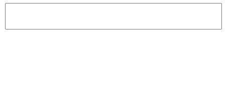
1 2 3 4 5 6 <div id ="app" > <input type ="text" v-model ="message" /> <p > {{ message }}</p > </div >
1 2 3 4 5 6 7 let app = new Vue({ el : '#app' , data : { message : '' } })
所以你能看到，當 <input> 的值改變時，message 的值會跟著改變，導致<p>的文字跟著改變。
背後的原理 其實v-model只是幫你做了兩件事情：
在元素上綁定 v-bind:value
當input事件發生時，更改 Vue 中的資料值
所以前面的範例等同於：
1 2 3 4 5 6 7 <div id ="app" > <input type ="text" v-bind:value ="message" v-on:input ="changeMessage" /> <p > {{ message }}</p > </div >
1 2 3 4 5 6 7 8 9 10 11 12 13 14 15 let vm = new Vue({ el : '#app' , data : { message : '' }, methods : { changeMessage : function ( this .message = event.target.value } } })
所以v-model就是個 :value + @input 的語法糖，能夠幫你剩下了一些功夫。但試著了解它在背後做了什麼也是很重要的。
computed 計算屬性 雖然在{{ }}中可以直接帶入表達式來產出想要的資料，但常常在裡面做很複雜的運算並不是一件好事吧？
1 2 3 4 5 6 7 let vm = new Vue({ el : '#app' , data : { firstName : '煉獄' , lastName : '杏壽郎' } })
1 <p > {{firstName + '．' + lastName}}</p >
💡 註：圖片來源
如果我們想要秀出好幾個大哥的名字，那就得一直做重複的運算，顯然不是件好事。
為了避免這種重複計算的事情發生，可以使用computed屬性來改善這個問題。
1 2 3 4 5 6 7 8 9 10 11 12 13 14 15 let vm = new Vue({ el : '#app' , data : { firstName : '煉獄' , lastName : '杏壽郎' }, computed : { fullName : function ( return this .firstName + '．' + this .lastName } } })
現在你想秀幾個大哥的名稱都沒問題囉！
1 2 3 4 5 <p > {{ fullName }}</p > <p > {{ fullName }}</p > <p > {{ fullName }}</p > <p > {{ fullName }}</p > <p > {{ fullName }}</p >
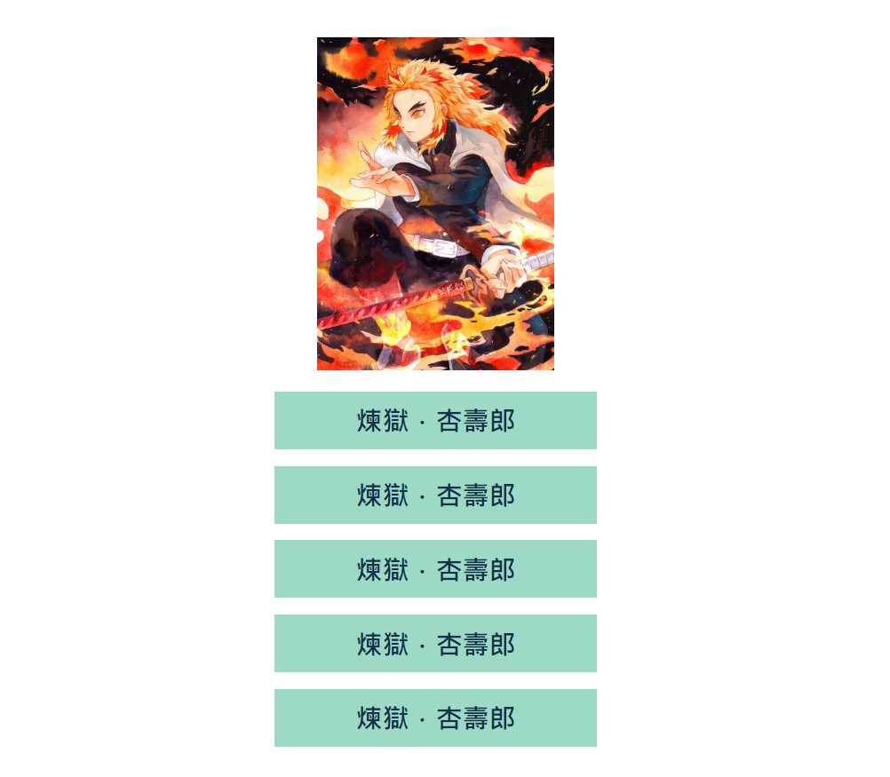
這樣子的好處並不只是看起來比較簡潔而已，而是computed屬性具有緩存的作用。
剛剛設置的fullName，是藉由firstName跟lastName來求出最後的值，所以這兩個值都沒有改變的話，fullName值是不會改變的，也就是說，fullName不需要重新計算來求值，這也就是緩存的用意。
computed 與 methods 前面的範例也能改用 methods 來做出一樣的結果，不過 methods 與 computed 最大的差異在於：
呼叫 methods 幾次，函式就會執行幾次
當 computed 依賴的屬性沒有發生改變時，不管呼叫幾次 computed，函式都只會執行一次。
1 2 3 4 5 6 7 8 9 10 11 12 13 14 15 16 17 18 19 20 21 let vm = new Vue({ el : '#app' , data : { firstName : '煉獄' , lastName : '杏壽郎' }, methods : { getfullName : function ( console .log('執行getfullName' ) return `${this .firstName} ．${this .lastName} ` } }, computed : { fullName : function ( console .log('執行fullName' ) return `${this .firstName} ．${this .lastName} ` } } })
1 2 3 4 5 6 <p > {{ getfullName() }}</p > <p > {{ getfullName() }}</p > <p > {{ getfullName() }}</p > <p > {{ fullName }}</p > <p > {{ fullName }}</p > <p > {{ fullName }}</p >
console中印證了我們剛剛所說的，我們呼叫了getfullName()3 次，故函式執行了 3 次，而fullName只有執行一次，因為firstName跟lastName都沒有發生改變。
getter 與 setter computed 還可以細分為 getter(讀取) 與 setter(寫入)這兩種功能。
在沒有特別設定時，預設只會有getter的功能，也就是只能讀取，不能寫入。
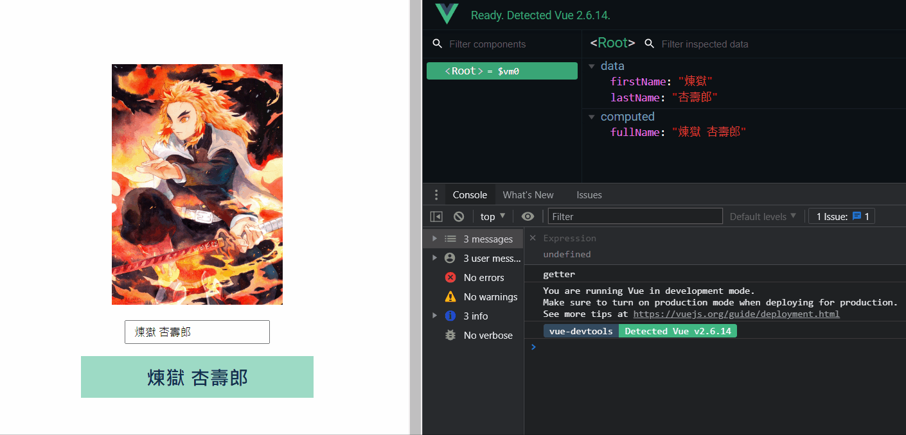
如圖所示，我們只能透過修改 firstName 或 lastName 來更新 fullName 的值，而不是直接修改 fullName 。
在前面的範例中我們都透過 computed 來讀取資料，但前面使用的是省略的寫法，完整的寫法如下。
1 2 3 4 5 6 7 8 9 10 11 12 13 14 15 16 17 let vm = new Vue({ el : '#app' , data : { firstName : '煉獄' , lastName : '杏壽郎' }, computed : { fullName : { get : function ( return this .firstName + '．' + this .lastName } } } })
如果要使用setter的功能，就要像下面這樣子寫。
1 2 <input type ="text" v-model ="fullName" />
1 2 3 4 5 6 7 8 9 10 11 12 13 14 15 16 17 18 19 let vm = new Vue({ el : '#app' , data : { firstName : '煉獄' , lastName : '杏壽郎' }, computed : { fullName : { get : function ( return this .firstName + '．' + this .lastName }, set : function (newValue ) console .log('觸發setter' ) } } } })
現在我們用v-model強制把 input 跟 fullName 的值綁在一起，所以當 input值改變時，就會去變更 fullName的值，這個時候就會觸發我們在set 函式中所做的設定。
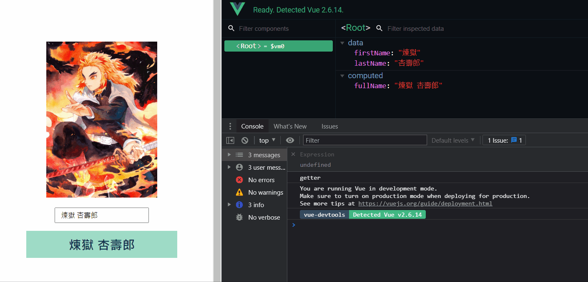
你可能會有個疑問，我們不是修改了fullName的值嗎？fullName的資料怎麼沒有更新？
這是因為在set函式中，並沒有會觸發get的設定。
既然get沒有被觸發的話，fullName的值就不會被重新計算，而畫面也自然不會重新渲染。
那要怎麼讓get觸發？我們只要在set中做會觸發get的事情就可以了。
1 2 3 4 5 6 7 8 9 10 11 12 13 14 15 16 17 18 19 20 21 22 23 24 25 26 27 28 29 30 let vm = new Vue({ el : '#app' , data : { firstName : '煉獄' , lastName : '杏壽郎' }, computed : { fullName : { get : function ( console .log('觸發getter' ) return this .firstName + ' ' + this .lastName }, set : function (newValue ) console .log('觸發setter' ) let names = newValue.split(' ' ) this .firstName = names[0 ] this .lastName = names[names.length - 1 ] } } }, updated ( console .log('重新渲染畫面' ) } })
現在當set觸發時，我們修改 firstName 與 lastName 的值，這個時候就會觸發 get 去重新計算 fullName 的值，並且重新渲染畫面。
所以順序是這樣子的： set → get → updated
要注意的重點是：
什麼時候會觸發 get？firstName與 lastName 變更時。（前提是模板中有用到 computed 設定的 fullName 屬性）
什麼時候會觸發 set？fullName變更時。(v-model綁定值)
什麼時候會重新渲染畫面？fullName）更新時。
所以做個總結：
get 與 set 兩者是獨立的，並不是 觸發 set 就會觸發 get。要觸發get的前提條件是，模板中有使用到其 computed 的屬性。
自定義組件 在 Vue 中可以透過建立一個 instance (實體) 來創造自己的 component (組件)。
格式：Vue.component(name, {})
第一個參數為 String，代表 component 的名稱。
第二個參數為選項 Object，用來對組件做設定。
💡 註 ：組件就跟 new Vue 一樣，可以有 data、computed、watch、methods及 hook function等。
1 2 3 4 5 6 7 8 9 10 11 12 13 14 15 16 17 18 19 20 21 22 23 24 25 26 Vue.component('counter' , { template : '<button v-on:click="addOne">{{ count }}</button>' , data ( return { count : 0 } }, methods : { addOne : function ( this .count++ } } }) let app = new Vue({ el : '#app' })
接著就能在 HTML 中使用剛剛自定義的組件名稱來作為 tag
1 2 3 4 5 6 7 8 9 10 <div id ="app" > <ul > <counter > </counter > <counter > </counter > <counter > </counter > <counter > </counter > <counter > </counter > </ul > </div >
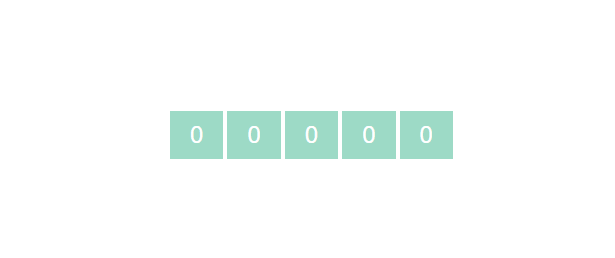
可以注意到每個組件都是一個獨立存在的 instance (實體)，所以並不會被彼此給干擾。
💡 註 ：一個組件只能有一個根元素，也就是說如果你的組件為巢狀結構，請在最外層以一個<div>來包裹住整個組件的內容。
組件的命名 在對組件命名時，建議都以 kebab-case (連字符號) 的方式來命名。
如果使用 camelCase (pascalCase) 的話，在 HTML 中也必須要轉換成 kebab-case 的格式才有辦法使用：
1 2 3 4 5 6 7 8 9 10 11 12 13 Vue.component('component-a' , { template : ` <div>kebab-case compoent</div> ` }) Vue.component('componentB' , { template : ` <div>camelCase compoent</div> ` })
1 2 3 4 5 <component-a > </component-a > <component-b > </component-b > <componentB > </componentB >
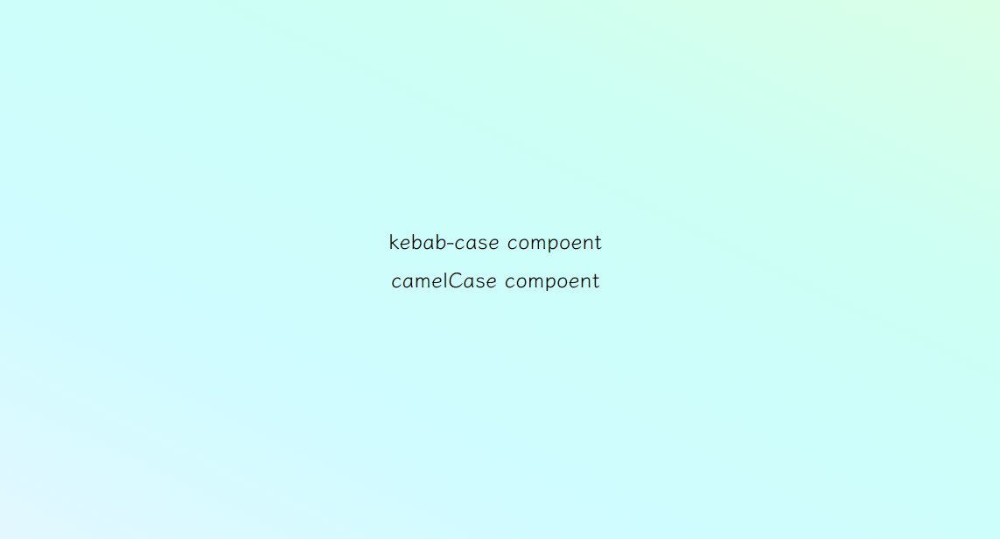
🚀 Codepen：點這裡
全域組件與區域組件 前面我們用 Vue.component() 來註冊的組件都稱為 全域組件。
全域組件可以被任何 new Vue 建立的 Vue實體 來使用，還有組件中的子組件也可以使用。
而區域組件是在一個實體中透過 components 屬性來建立，並且只有這個實體自己能夠使用。
全域註冊 1 2 3 4 5 6 7 8 9 10 11 12 13 14 15 16 17 18 19 20 21 22 23 24 Vue.component('component-a' , { template : ` <div class="component component--a"> <h2>組件A</h2> <p>組件A的文字</p> </div>` }) Vue.component('component-b' , { template : ` <div class="component"> <h2>組件B</h2> <p>在組件B中使用組件A</p> <component-a></component-a> </div>` }) let vm = new Vue({ el : '#app' })
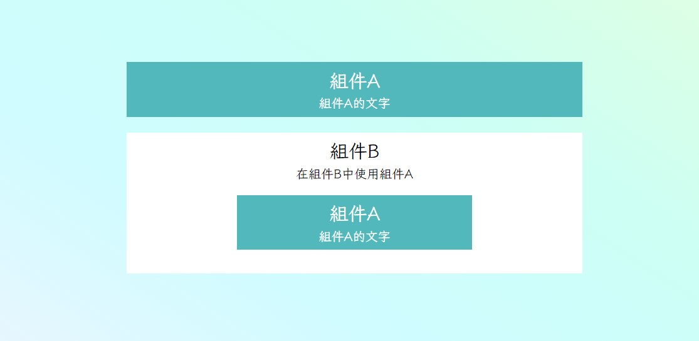
🚀 Codepen：點這裡
全域組件在整個 Vue.js 的應用程式中都可以使用，不只是new Vue實體，甚至連在其他組件中也能使用。
區域註冊 全域組件有一個很大的缺點是，不管這個組件有沒有被使用，都會被載入。
所以如果是給特定的實體使用的話，可以改用區域註冊的方式來建立組件。
1 2 3 4 5 6 7 8 9 10 11 12 13 14 15 16 17 18 19 20 21 22 23 24 let vm = new Vue({ el : '#app' , components : { 'component-a' : { template : ` <div class="component component--a"> <h2>區域組件A</h2> <p>區域組件A的文字</p> </div>` }, 'component-b' : { template : ` <div class="component"> <h2>區域組件B</h2> <p>這裡無法使用區域組件A</p> <component-a></component-a> </div>` } } })
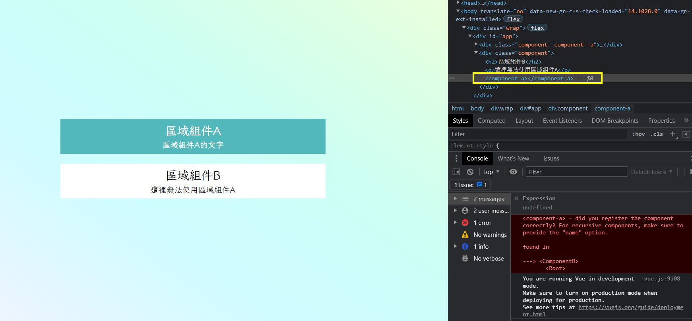
🚀 Codepen：點這裡
可以看到 組件B 中沒辦法使用 組件A，此處的 組件A 會被直接渲染成一個沒有內容的標籤，而 Vue 也會在 console 報錯。
如果要在 組件B 中使用 組件A，只能在 組件B 這個實體下在註冊一個區域組件，才有辦法達成。
💡 註 ：每個組件都可以視為是一個獨立的實體。
1 2 3 4 5 6 7 8 9 10 11 12 13 14 15 16 17 18 19 20 21 22 23 24 25 26 27 28 let vm = new Vue({ el : '#app' , components : { 'component-b' : { template : ` <div class="component"> <h2>區域組件B</h2> <p>在此處使用組件A</p> <component-a></component-a> </div>` , components : { 'component-a' : { template : ` <div class="component component--a"> <h2>區域組件A</h2> <p>區域組件A的文字</p> </div>` } } } } })
🚀 Codepen：點這裡
這樣子就能順利在 組件B 中使用 組件A 囉。
父子組件間的資料傳輸 因為父組件跟子組件是屬於不同的實體，所以子組件沒辦法直接去使用父組件的方法，也不能修改父組件中的資料。
要讓父子之間做溝通，必須使用 props屬性 及 $emit方法才有辦法達成。
有一句口訣是這樣子： Props down, Events up (props下去，event上來)。
如同下面這張圖所示：
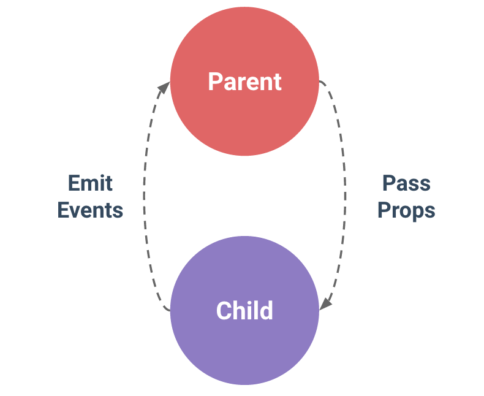
將父組件的資料 props 到子組件中 這裡直接舉例子來說明。
為了要在子組件中取得父組件的 msg，我們會建立一個 props 用來把資料給傳遞下去。
1 2 3 4 5 6 7 8 9 10 11 12 13 14 15 16 17 18 19 20 21 22 23 24 Vue.component('my-component' , { template : ` <div class="component"> <p>組件自己的資料：{{ msg }} </p> <p>從父元件傳遞進來的資料： {{ parentMsg }}</p> </div>` , props : ['parentMsg' ], data ( return { msg : 'Hello' } } }) let app = new Vue({ el : '#app' , data : { msg : 'Parent' } })
接著在子組件設定完 props後，必須使用 v-bind 來把父組件中的資料綁定給子組件。
💡 註：HTML 的屬性沒有大小寫敏感(Case-insensitive)的特性，所以如果props是以(Camel-case)駝峰式的寫法來命名，那麼在 HTML 中則必須使用Kebab-case (連字符號)來表示 props 所定義的屬性
1 2 3 4 <div id ="app" > <my-component v-bind:parent-msg ="msg" > </my-component > </div >
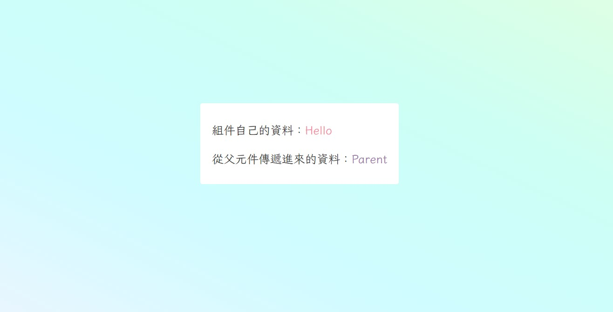
🚀 Codepen：點這裡
這樣子就成功把父組件的資料傳遞給子組件囉。
這裡提供一種記憶方式，你可以把 props 想成是 宣告一個變數，而 v-bind 可以想成是在給變數 賦值。
當需要傳入很多資料到組件中時 假設我們有一個文章的組件，長的像這樣子。
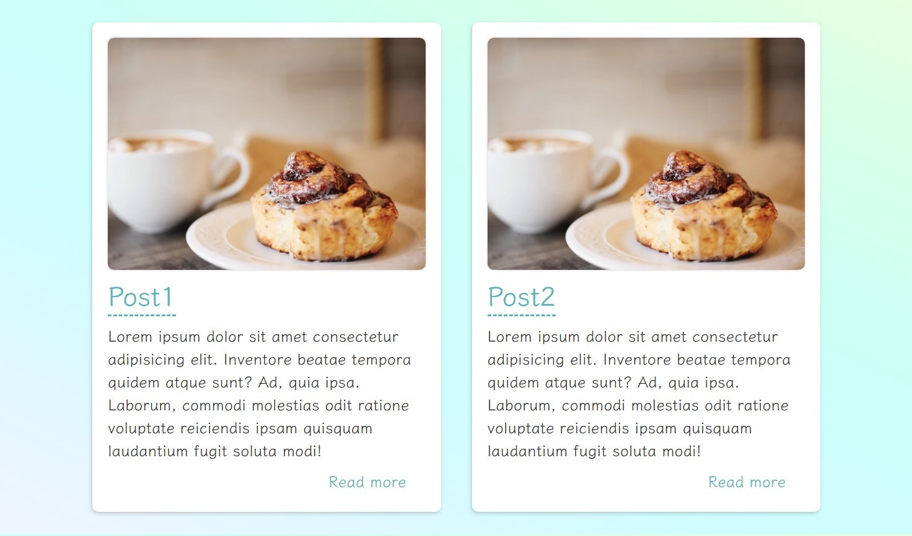
🚀 Codepen：點這裡
而組件的結構如下：
1 2 3 4 5 6 7 8 9 10 11 12 13 14 15 16 <div id ="app" > <div class ="wrap" > <blog-post v-for ="post in posts" v-bind:title ="post.title" v-bind:content ="post.content" v-bind:img ="post.img" :key ="post.id" > </blog-post > </div > </div >
1 2 3 4 5 6 7 8 9 10 11 12 13 14 15 16 17 18 19 20 21 22 23 24 25 26 27 let vm = new Vue({ el : '#app' , data : { posts : [ { id : 1 , title : '...' , content : '...' , img : '...' }, { id : 2 , title : '...' , content : '...' , img : '...' }, { id : 3 , title : '...' , content : '...' , img : '...' }, { id : 4 , title : '...' , content : '...' , img : '...' }, { id : 5 , title : '...' , content : '...' , img : '...' } ] }, components : { 'blog-post' : { template : ` <div> <img v-bind:src="img"> <h2>{{ title }}</h2> <p>{{ content }}</p> </div> ` , props : ['title' , 'content' , 'img' ] } } })
<blog-post>中需要 title (標題)、 content (內容)、 img (圖片) 這些資料，所以我們就得 props 這些資料到組件中。
所以可以看到 props 中需要寫入很多個屬性，以及 HTML 中用了很多 v-bind 來綁定這些 props 。
如果現在想要再添加 date (日期)， comments (留言) 等等的資料， props 跟 HTML 就也得把這些對應的資料給加進去，資料也會變得越來越複雜。
要處裡這種資料很複雜的情況，我們可以稍微修改一下整體的結構，如下：
1 2 3 4 5 6 7 8 9 10 11 12 <div id ="app" > <div class ="wrap" > <blog-post v-for ="post in posts" :key ="post.id" v-bind:post ="post" > </blog-post > </div > </div >
1 2 3 4 5 6 7 8 9 10 11 12 13 14 15 16 17 18 19 20 21 22 23 24 25 26 27 28 let vm = new Vue({ el : '#app' , data : { posts : [ { id : 1 , title : '...' , content : '...' , img : '...' }, { id : 2 , title : '...' , content : '...' , img : '...' }, { id : 3 , title : '...' , content : '...' , img : '...' }, { id : 4 , title : '...' , content : '...' , img : '...' }, { id : 5 , title : '...' , content : '...' , img : '...' } ] }, components : { 'blog-post' : { template : ` <div> <img v-bind:src="post.img"> <h2>{{ post.title }}</h2> <p>{{ post.content }}</p> </div> ` , props : ['post' ] } } })
寫成這樣子後，在 post 中加入新的資料，都能直接在 <blog-post> 中使用 ，不需要在額外對 props 或 HTML 中加入新的資料。
監聽組件中的事件 一樣拿前面的例子來說，假設現在我們想要在組件中添加一個按鈕，這個按鈕能夠用來控制字體大小，像這樣子：
🚀 Codepen：點這裡
該怎麼做呢？
首先先在 data 中新增一筆用來控制文字大小的 property。
1 2 3 4 5 6 7 8 let vm = new Vue({ el : '#app' , data : { posts : [...], postFontSize : 1 }, })
接著在 HTML 新增一個元素，用來控制<blog-post>文字大小。
1 2 3 4 5 6 7 8 9 10 <div id ="app" > <div :style ="{fontSize: postFontSize + 'em'}" > <blog-post v-for ="post in posts" v-bind:post ="post" :key ="post.id" > </blog-post > </div > </div >
接下來在組件的 template 中設置那個控制文字大小的按鈕。
1 2 3 4 5 6 7 8 9 10 11 12 13 14 15 16 17 18 19 20 21 22 23 24 25 let vm = new Vue({ el : '#app' , data : { } components : { 'blog-post' : { template : ` <div> <img v-bind:src="img"> <h2>{{ post.title }}</h2> <p>{{ post.content }}</p> <a href="#">Read more</a> // ↓ 那個按鈕 <button>{{ size }}</button> </div> ` , props : ['post' , 'size' ] } } })
💡 註 ：這裡希望按鈕能顯示目前的文字的比例，所以 props 一筆資料給組件。
接著只要設定點擊事件就可以了，你可能會想說這樣寫：
1 2 3 4 { template : `<button v-on:click="postFontSize+=0.1">{{ size }}</button>` }
這樣子是沒有作用的。再提醒一次，子組件無法修改父組件的資料。
只有父組件能夠修改 data 中的資料，所以思路要變成 → 讓父組件監聽在子組件中發生的事件，當父組件監聽到內部的事件發生時，再來修改資料。
也就是說要在<blog-post>上設定一個能夠監聽內部子元素的事件。
這要怎麼做到呢？
Vue 提供了一個 自定義事件 的系統，讓我們可以自己建立一種事件，所以可以這樣子設定：
1 2 3 <blog-post v-on:enlarge-text ="changeFontSize" > </blog-post >
接著要在 template 中的按鈕中定義這個事件。
1 2 3 4 5 6 { template : `<button v-on:click="$emit('enlargeText', 0.1)">{{ size }}</button>` }
最後在 data 中的 methods 定義用來處理事件的函式。
1 2 3 4 5 6 methods: { changeFontSize : function (enlargeAmount ) this .postFontSize += enlargeAmount } }
這樣子就完成了。
雖然看起來有點複雜，但這一大串的目的其實只有一個，讓父元素能夠監聽到按鈕的 click 事件，接著做對應處理，就這麼單純而已。
在組件上使用 v-model 再複習一次 v-model 的原理。
1 2 3 <input v-model ="text" /> <input v-bind:value ="text" v-on:input ="text = $event" />
特別注意一點：v-model 預設綁定的屬性是value，監聽的事件是input。
而我們的最終目標是這樣：
1 <my-component v-model ="text" > </my-component >
等於要變成這樣：
1 <my-component v-bind:value ="text" v-on:input ="text = $event" > </my-component >
也就是說我們必須生出一個 value 屬性讓組件可以 v-bind，以及用來監聽 input 事件的監聽器。
所以，我們得 props 一個叫做 value 的屬性，同時在組件中的子元素拋出一個 input 的自定義事件，如下：
1 2 3 4 5 6 7 8 9 10 Vue.component('my-component' , { template : ` <div> <input v-bind:value="value" v-on:input="$emit('input', $event.target.value)"> </div> ` , props : ['value' ] })
這樣子組件上的 v-model 就能夠正常運作囉。
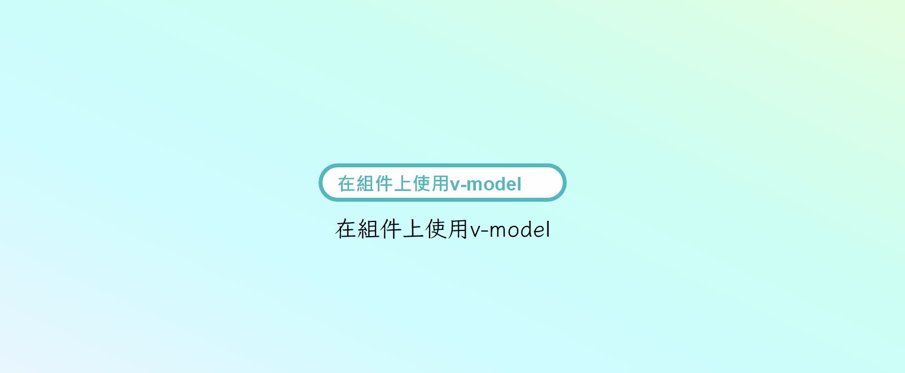
🚀 Codepen：點這裡
客製組件的 v-model 由於 v-model 是 v-bind:value 及 v-on:input 的語法糖，所以如果要做雙向綁定的元素是 <input> 的話沒什麼問題。
但如果現在要綁的元素變成 radio 或是 checkbox 之類的元素，就無法套用 v-model 的預設值。
這個時候就得對 v-bind 及 v-on 客製化，來讓 v-model 能夠順利運作。
你可以在組件中加上一個 model 的屬性來做設定，如下：
1 2 3 4 5 6 7 8 9 10 11 12 13 14 15 16 17 18 19 20 21 22 Vue.component('my-checkbox' , { template : ` <label> <input type="checkbox" v-bind:checked="checkded" v-on:change="$emit('change', $event.target.checked)" > 客製化v-model </label> ` , props : ['checked' ], model : { prop : 'checked' , event : 'change' } })
1 2 3 4 5 6 7 8 9 10 11 <div class ="wrap" > <div id ="app" > <my-checkbox v-model ="ischecked" > </my-checkbox > <my-checkbox :checked ="ischecked" v-on:change ="ischecked = $event" > </my-checkbox > </div > </div >
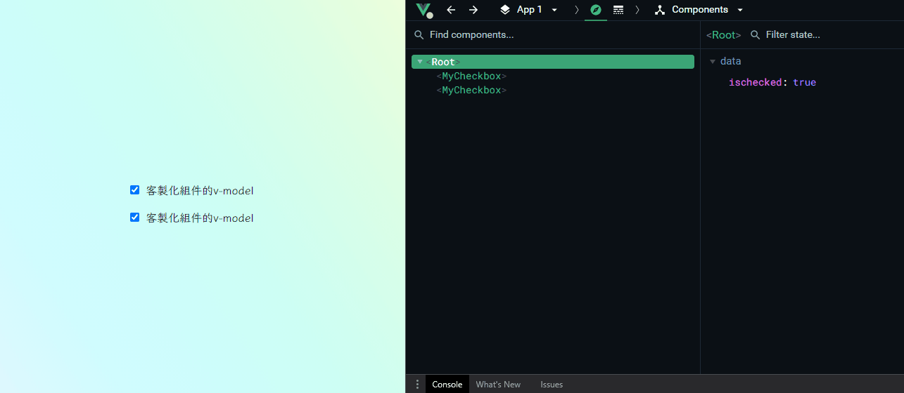
🚀 Codepen：點這裡
Vue 的響應式更新 如同前面的示範，當你在 Vue 的data中加入某些資料時，這些資料就會跟 Vue 相依為命。
當資料的值改變時，Vue 中的 data 值也會跟著改變。
當 Vue 中的 data 值改變時，資料的值也會跟著改變。
1 2 3 4 5 6 7 8 9 10 11 12 13 14 15 16 17 18 19 20 21 22 23 24 25 let data = { a : 1 }let vm = new Vue({ data : data }) console .log(vm.a === data.a)data.a = 2 console .log(vm.a)vm.a = 3 console .log(data.a)
但有一個例外，就是使用了Object.freeze()。
1 2 3 4 5 6 <div id ="app" class ="wrap" > <p class ="txt" > {{ foo }}</p > <button @click ="foo='Fooooooo'" class ="btn" > Change</button > </div >
1 2 3 4 5 6 7 8 let obj = { foo : 'bar' }let vm = new Vue({ el : '#app' , data : obj })
在響應式的情況下是這樣子：
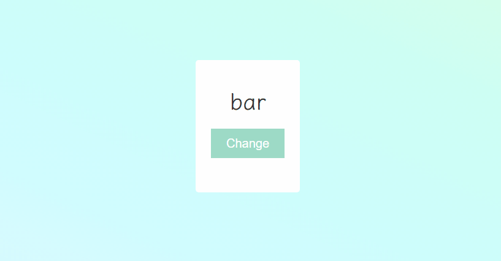
但加入 Object.freeze()後，資料的值就無法更新。
1 2 3 4 5 6 7 8 9 10 11 12 let obj = { foo : 'bar' }Object .freeze(obj)let vm = new Vue({ el : '#app' , data : obj })
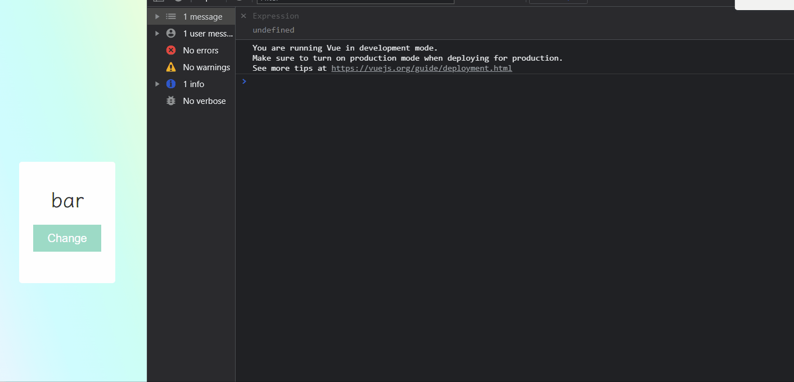
💡 註 ：Object.freeze()會把一個物件給凍結住，所以自然就無法在對物件做更改。
生命週期 一個 Vue 實體會經過 建立 → 掛載 → 更新 → 銷毀這四個階段，我們把這稱為是一個 Vue 實體的生命週期。
在這每一個階段中，Vue 提供了幾個 callback function，稱作 Hooks function，能夠讓你在不同的階段中，透過這些 Hooks function 來做一些事情。
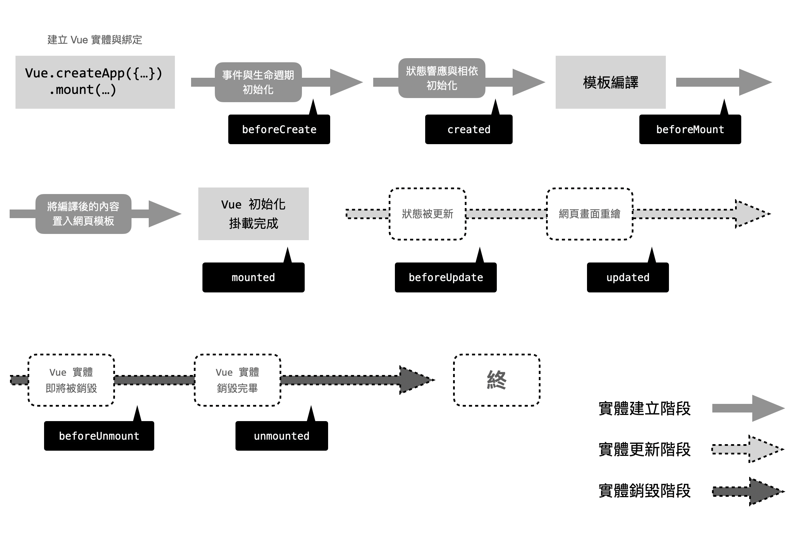
💡 註：圖片來源
每個階段會觸發的Hooks function如上圖所示，忘記的話就參考這張圖。
beforeCreate：實體在初始化時就會被呼叫，此時還沒有建立實體，所以 Vue 實體中的任何設定（例如：data）都還沒有配置完成。created：實體建立完成，這個時候除了 $el 以外的配置都已經完成。（$el必須掛載到模板上之後才會配置）。beforeMount：在實體被掛載到目標元素之前會被呼叫，這時的 $el 還只是個模板，尚未被 Vue 實體渲染成頁面。mounted：Vue 實體上的配置已經安裝到模板上，這時的 $el 已經藉由 Vue 實體渲染成真正的頁面。beforeUpdate：當實體中的 data 發生改變，或是執行 vm.$forceUpdate() 時會被呼叫，此時的頁面還沒有被重新渲染。updated：在頁面被重新渲染後呼叫，此時的頁面已經被渲染成改變後的頁面。beforeDestroy：在此實體被銷毀之前呼叫，此時的實體還具有完整的功能。destroyed：在此實體被銷毀後叫用，此時實體中的任何定義（data、methods…等）都已經被解除綁定，代表在這之後的任何操作都沒有用。
我們用以下的例子來做演練：
1 2 3 <div id ="app" > <p > {{ a }}</p > </div >
1 2 3 4 5 6 let vm = new Vue({ el : '#app' , data : { a : 1 } })
beforeCreate 與 created在設定中加上beforeCreate 與 created：
1 2 3 4 5 6 7 8 9 10 11 12 13 14 15 16 17 18 let vm = new Vue({ el : '#app' , data : { a : 1 }, beforeCreate ( console .log('Hook beforeCreate' ) console .log(`試著讀取a的值 : ${this .a} ` ) console .log(`試著讀取el的值 : ${this .$el} ` ) console .log(' ' ) }, created ( console .log('Hook created' ) console .log(`試著讀取a的值 : ${this .a} ` ) console .log(`試著讀取el的值 : ${this .$el} ` ) console .log(' ' ) } })
結果如下：
1 2 3 4 5 6 7 Hook beforeCreate 試著讀取a的值 : undefined 試著讀取el的值 : undefined Hook created 試著讀取a的值 : 1 試著讀取el的值 : undefined
🚀 Codepen：點這裡
beforeCreate：此時實體還沒有建立，所以去讀取實體中的資料都會得到 undefined。created：實體被建立完成後，就可以讀取到 a 的值，而 $el 必須等到掛載時才讀取的到。
所以在 beforeCreate 是不能對實體中的物件做操作的
beforeMount 與 mounted現在加上beforeMount 與 mounted：
1 2 3 4 5 6 7 8 9 10 11 12 13 14 15 16 17 18 let vm = new Vue({ el : '#app' , data : { a : 1 }, beforeMount ( console .log('Hook beforeMount' ) console .log('試著擷取el元素的outerHTML' ) console .log(this .$el.outerHTML) console .log(' ' ) }, mounted ( console .log('Hook mounted' ) console .log('試著擷取el元素的outerHTML' ) console .log(this .$el.outerHTML) console .log(' ' ) } })
結果如下:
1 2 3 4 5 6 7 8 9 Hook beforeMount 試著擷取el元素的outerHTML <div id="app"> <p class="num">{{ a }}</p> </div> Hook mounted 試著擷取el元素的outerHTML <div id="app"><p class="num">1</p></div>
🚀 Codepen：點這裡
beforeMount：流程圖中有提到，實體在掛載到元素上之前，若沒有使用 template 屬性的話，元素（這裡是#app）的 outerHTML 會先被編譯成模板，所以才能夠讀取到 $el 的資料，只是他還沒有被 Vue 實體上的定義給渲染，只是個初始的模板，所以會看到都還是以模板語法的內容 {{ a }} 來呈現。
mounted：實體掛載到元素上之後， 此時的 {{ a }} 已經被 Vue 實體上的定義給渲染，所以會看到顯示的是 1，也就是 a 在實體中的定義。
beforeUpdate 與 updated現在加上beforeUpdate 與 updated
1 2 3 4 5 6 7 8 9 10 11 12 13 14 15 16 17 18 19 20 let vm = new Vue({ el : '#app' , data : { a : 1 }, beforeUpdate ( console .log('Hook beforeUpdate' ) console .log(`試著擷取a的值：${this .a} ` ) console .log(`試著擷取el的值：${this .$el} ` ) console .log(`試著擷取el的outerHTML：${this .$el.outerHTML} ` ) console .log(' ' ) }, updated ( console .log('Hook updated' ) console .log(`試著擷取a的值：${this .a} ` ) console .log(`試著擷取el的值：${this .$el} ` ) console .log(`試著擷取el的outerHTML：${this .$el.outerHTML} ` ) console .log(' ' ) } })
現在在頁面上新增一個按鈕，用來增加 a的值：
1 2 3 4 <div id ="app" > <p class ="num" > {{ a }}</p > <button class ="btn" @click ="a++" > add</button > </div >
當按下按鈕後，結果如下：
1 2 3 4 5 6 7 8 9 Hook beforeUpdate 試著擷取a的值：2 試著擷取el的值：[object HTMLDivElement] 試著擷取el的outerHTML：<div id="app"><p class="num">1</p> <button class="btn">add</button></div> Hook updated 試著擷取a的值：2 試著擷取el的值：[object HTMLDivElement] 試著擷取el的outerHTML：<div id="app"><p class="num">2</p> <button class="btn">add</button></div>
🚀 Codepen：點這裡
beforeUpdate： 在畫面重新渲染之前，實體中的 a 已經被更新為 2，但畫面顯示的還是未更新前的資料 1。updated：當畫面重新渲染後，畫面也會被渲染成更新後的資料 2。
beforeDestroy 與 destroyed現在加上beforeDestroy 與 destroyed：
1 2 3 4 5 6 7 8 9 10 11 12 13 14 let vm = new Vue({ el : '#app' , data : { a : 1 }, beforeDestroy ( console .log('Hook beforeDestroy' ) console .log(' ' ) }, destroyed ( console .log('Hook destroy' ) console .log(' ' ) } })
再加上一個用來觸發 destroy() 撤銷的按鈕：
1 2 3 4 5 6 7 <div class ="wrap" > <div id ="app" > <p class ="num" > {{ a }}</p > <button class ="btn" @click ="a++" > add</button > <button class ="btn" @click ="$destroy()" > Destroy instance</button > </div > </div >
當按下按鈕時，結果如下：
1 2 3 Hook beforeDestroy Hook destroy
🚀 Codepen：點這裡
參考資料 介绍 — Vue.js 重新認識 Vue.js | Kuro Hsu [Vue] 還是不懂 Computed ？ vue.js 计算属性 computed【getter 和 setter 的一些思考】 那些關於 Vue 的小細節 - Computed 中 getter 和 setter 觸發的時間點 [Vue.js] updated()，要怎麼用！ 面试官：为什么 Vue 中的 v-if 和 v-for 不建议一起用?